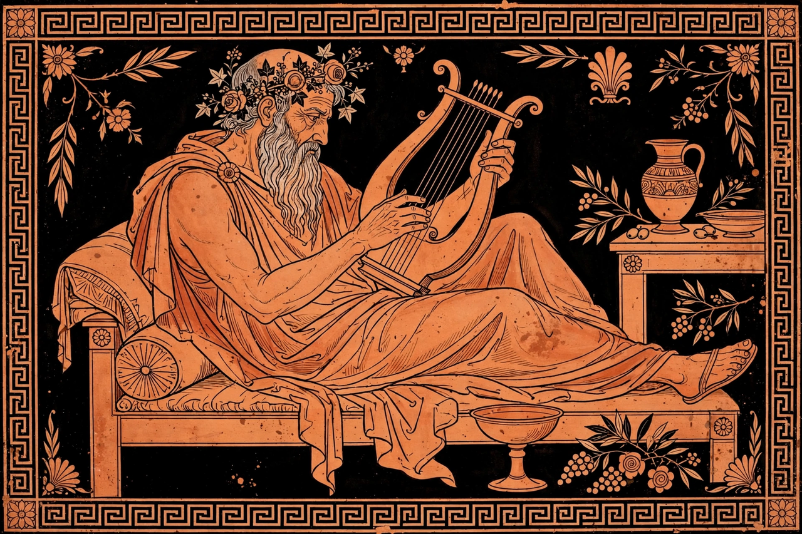

From Wikipedia, the free encyclopedia
| Born | c. 582 BC Teos, Ionia |
|---|---|
| Died | c. 485 BC |
| Occupation | Lyric poet |
| Language | Ancient Greek (Ionic dialect) |
| Genre | Monodic lyric, iambic poetry |
Anacreon (c. 582 – c. 485 BC) was a Greek lyric poet, notable for his drinking songs and erotic poems. Later Greeks included him in the canonical list of the Nine Lyric Poets. His graceful verse, sung to the lyre at symposia, celebrates wine, love and youth while ruefully acknowledging old age.

Anacreon entertaining guests at a symposium.
Anacreon was born at Teos, an Ionian city on the coast of Asia Minor. When Persia conquered Ionia, his family emigrated to Abdera in Thrace. He became court poet to Polycrates, the wealthy tyrant of Samos, and after Polycrates' death moved to Athens at the invitation of the tyrant Hipparchus. After Hipparchus's assassination in 514 BC he appears to have spent time in Thessaly. The ancients said he died at about 85, choking on a grape pip — a fittingly sympotic end, probably legendary.
Only fragments of Anacreon's work survive, quoted by later authors and preserved on papyrus. His short songs in simple metres treat love (often for the youth Bathyllus), wine, garlands and parties with wit and delicacy; some fragments strike a darker note on grey hair and approaching death. His elegant persona — the tipsy, amorous old man — became a lasting literary mask.
Imitations of Anacreon written over the following centuries were collected as the Anacreontea; long mistaken for his genuine work, they were published by Henri Estienne in 1554 and inspired a craze for "Anacreontic" verse across Europe. In 18th-century London the Anacreontic Society of gentlemen musicians took its name from him; its club song, "To Anacreon in Heaven", furnished the melody later used for "The Star-Spangled Banner".